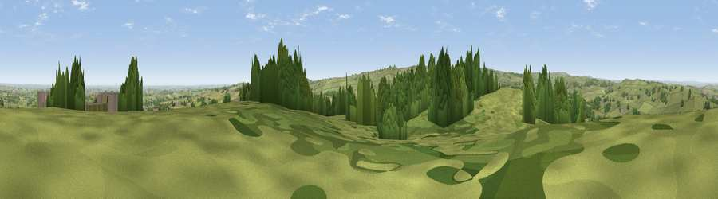

Viewpoint near Millhouse Green
#8698 in England · top 9% of its area beats it · near Millhouse GreenThe view, rendered

A 360° render of this exact spot computed from the terrain model, tree cover and land cover — summer colours, afternoon light, calibrated against photographs of famous viewpoints. Real trees, hedges and buildings will differ in detail.
The panorama
Grey silhouette: terrain skyline in each direction (720 bearings, Earth curvature and refraction included). Dashed green: skyline with trees (+15 m) and buildings (+8 m) as obstacles. Blue strip: how far the ground is visible on each bearing.
Where the view opens
Wedge length = distance to the farthest visible ground on that bearing (vegetation-aware). Rings at 10, 25 and 50 km.
What fills the view
67% grassland · 24% woodland · 6% cropland · 2% built-up
Angular shares of the visible panorama (visual magnitude), not map area. Landscape diversity 0.38 (0–1 Shannon).
Key numbers
More beautiful places nearby
The staircase of upgrades: each row has a higher view potential than everything closer. Driving times are estimates from straight-line distance, calibrated against real road routing — check an actual route before setting out.
| Place | Direction | Drive | Score |
|---|---|---|---|
| Viewpoint near Midhopestones | SE · 2 km | ~5 min | 67.3 |
| Viewpoint near Hoylandswaine | NE · 4 km | ~10 min | 71.8 |
| Viewpoint near Hoylandswaine | NE · 4 km | ~10 min | 72.7 |
| Viewpoint near Stocksbridge | ESE · 5 km | ~11 min | 73.1 |
| Viewpoint near Jackson Bridge | NW · 7 km | ~15 min | 73.5 |
| Viewpoint near Wharncliffe Side | ESE · 10 km | ~20 min | 75.0 |
| Viewpoint near Wharncliffe Side | ESE · 11 km | ~20 min | 75.2 |
| Viewpoint near Greenfield | W · 22 km | ~37 min | 76.0 |
53.51308, -1.66406 · source: screening · position refined by local search. Computed location — check access rights before visiting.